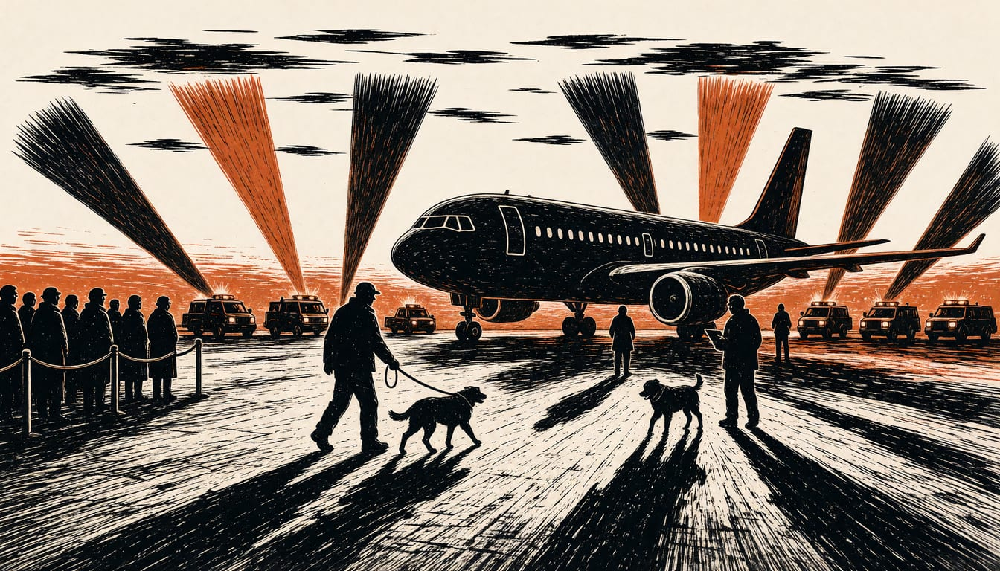
Bomb hoaxes disrupt at least 18 flights across nine countries
Aer Lingus, Ryanair and Finnair flights were hit on 6 November. Searches found no explosives and all aircraft landed safely.
The Harbour Ledger
News from the quay up.

Aer Lingus, Ryanair and Finnair flights were hit on 6 November. Searches found no explosives and all aircraft landed safely.
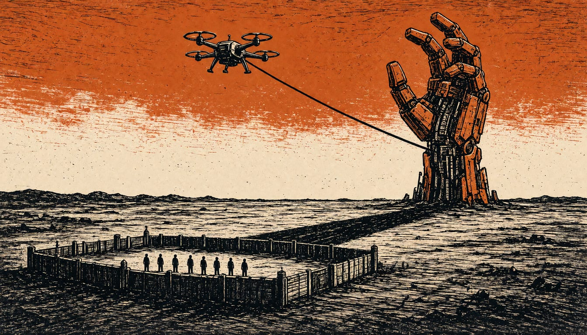
Parliament stayed out, rivals stayed out, and a Dutch or European software answer exists so far only as the ministry's stated option. Experts warned of lost autonomy.
Zelensky says 43 bodies were recovered and 53 people are missing. Rescuers and police died in a second hit on a nearby shelter. The UN has condemned the strikes.
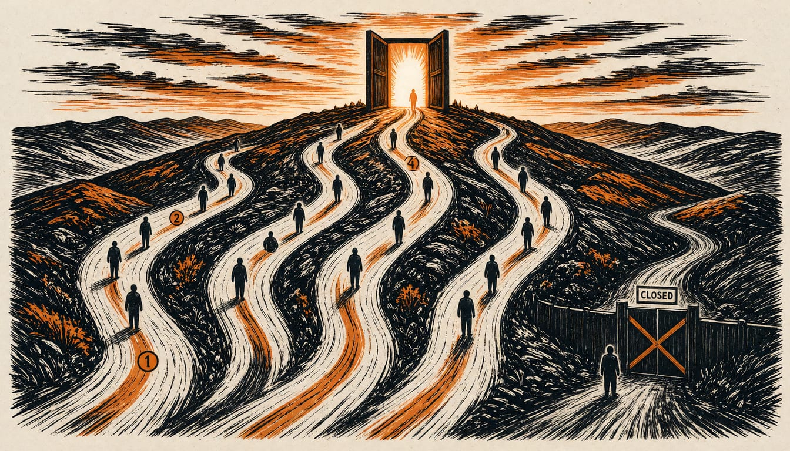
The Commission set out paths for Montenegro, Albania, Moldova and Ukraine and says candidates get access to selected areas of the single market before they join. Serbia made no substantive progress.

US envoy Steve Witkoff announced the talks. Kyiv wants an energy truce and a reopened Black Sea, and says it needs an extra 70 billion euros from Europe next year.
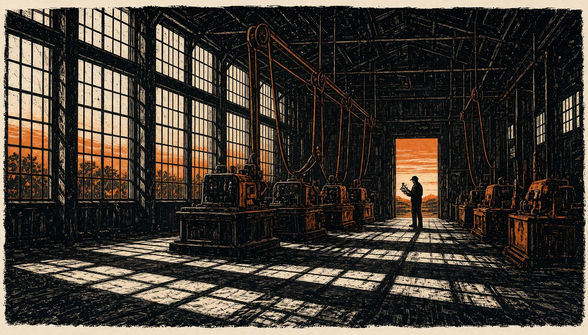
About 2,660 posts go in Germany. The Herstal site closes with roughly 15 jobs lost.
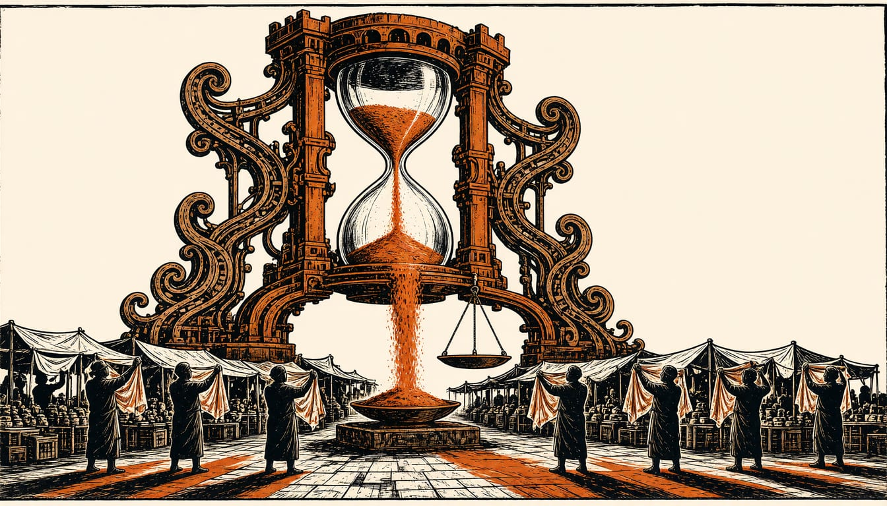
Opinion
Two years of findings against Meta and TikTok, and still no final decision. Brussels must close the cases before national bans and patchwork rules do the job for it.
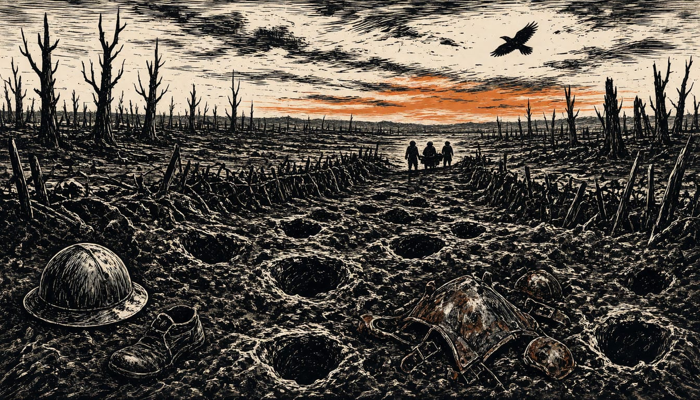
Russian forces gave up a net 27.29 square kilometres for the second month running, even in Donetsk where the push is strongest.
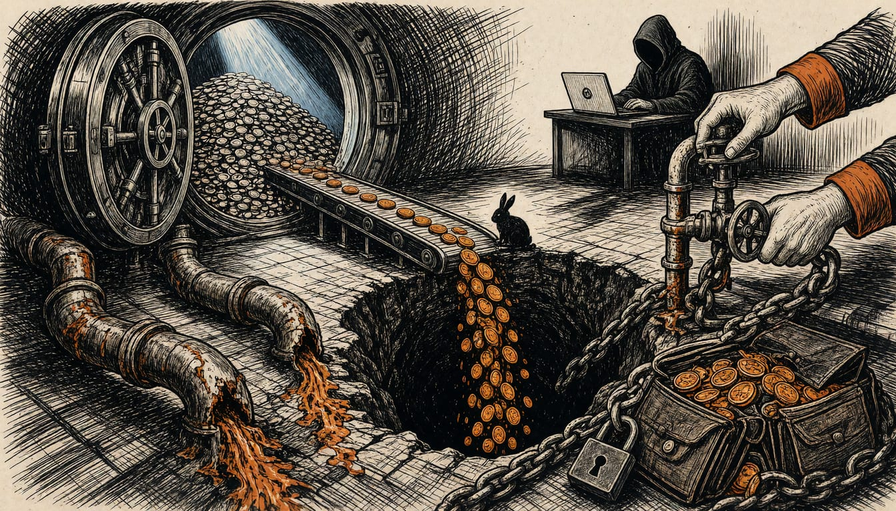
Crypto firms have frozen about $2.7 billion of the stolen funds. Binance says user funds are safe and it will cover all losses.

The paper says Brave sold its journalism through its Search API and shipped a default paywall blocker. Other newspapers have filed their own suits in the same court.
The group put him in its 2026 gallery of 33. The United States fell seven places to 64th of 180 countries.
He told an audience in Barcelona a win for either would leave no European Community. The RN wants to cut France's 30.9 billion euro EU contribution the most, Le Figaro reports. France votes for president on 18 April.
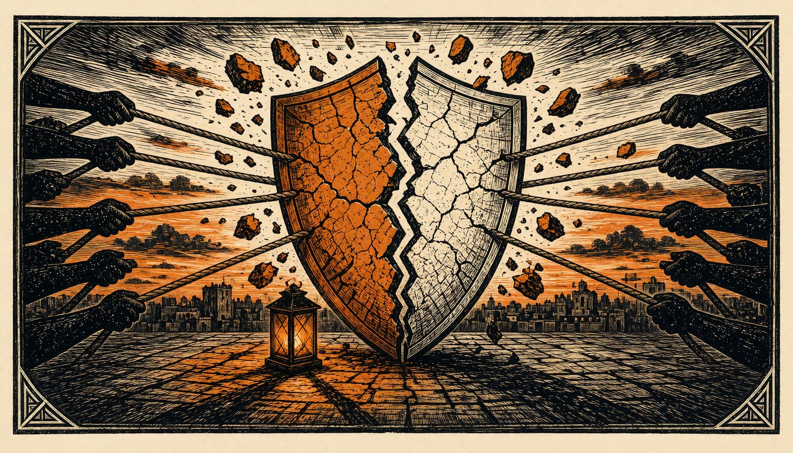
Member states want to keep the decisions for themselves. MEPs debate cyber resilience and critical infrastructure on Wednesday at 15:00.
The Council has one month to decide on lifting the 2022 measures, which would also restore Hungarian access to Horizon Europe.
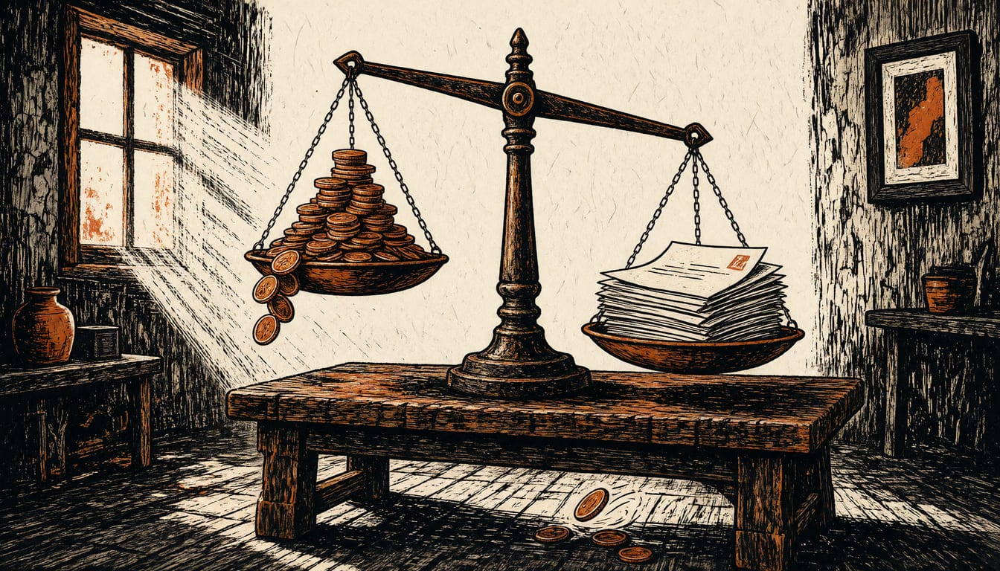
Two decades of membership closed much of the gap with the EU, but the euros did less of that work than the price tag suggests. The deficits and debt are Poland's own, and the next round of costs is still up for grabs.
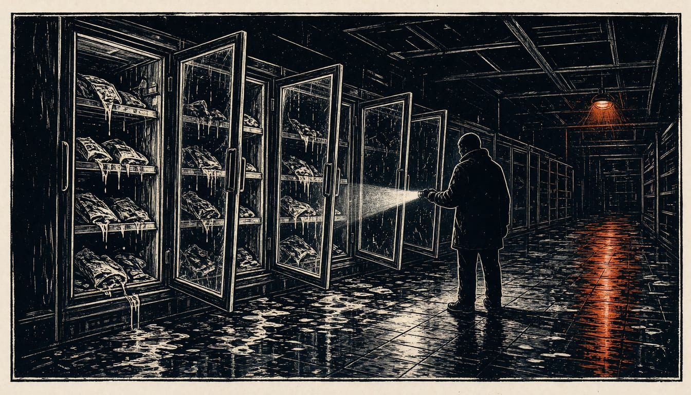
The second attack in three weeks hit stores in France, Belgium, Sweden and the Netherlands. Intermarché's chief says France alone faces losses of tens of millions of euros in a day.
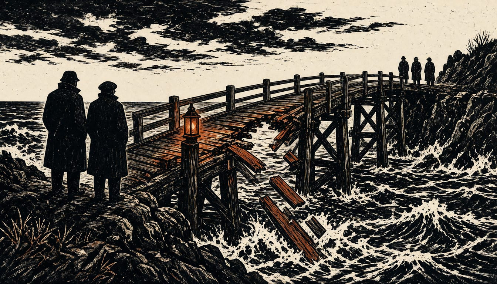
The Pentagon has cancelled a brigade rotation to Poland and plans fewer troops in Germany, and diplomats fear more after the midterms. The White House points to the 5 percent spending deal.
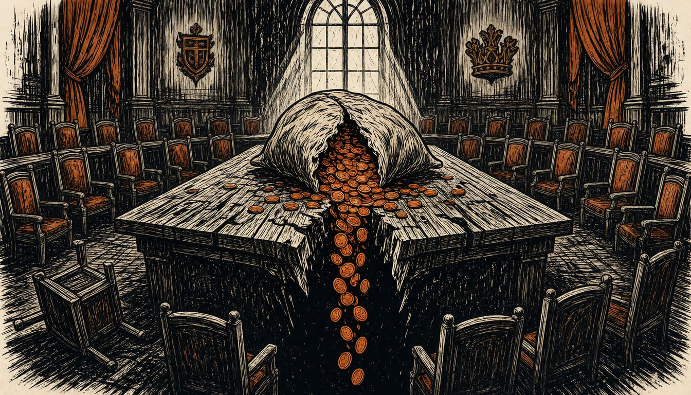
King Philippe is considering Prime Minister De Wever's resignation. If he accepts it, elections must follow within forty days.

Diplomats say the deal drops the 'associate member' label Canada wanted, after Germany objected. It promises fewer trade barriers and a study on more Canadian LNG exports to Europe.

The Air Alert app reached about 6.7 million users before developers shut it down and restored it within two hours. A Russian emergency ministry app was hit the next night.

The ruling covers all tournaments, including the 2027 World Championship in Germany. Foreign Minister Elina Valtonen says she will move to block Russian athletes from entering Finland.
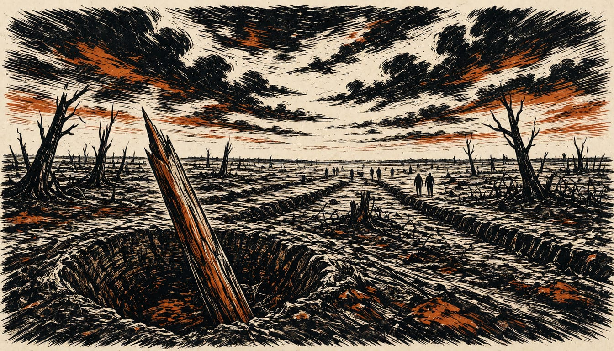
Ukraine counted 54,400 Russian soldiers killed or wounded in one month. Russian forces advanced only in the Sumy and Zaporizhia regions.
The Koalicja exercise at Nowa Dęba starts on 9 November. Le Monde reports almost 3,000 soldiers; RMF24 says nearly 5,000. At its end, the Ukraine force command moves from Paris to London.
The Council of Europe's monitoring committee can no longer enter Russian prisons or detention places. It visited over 450 sites there between 1998 and 2021.
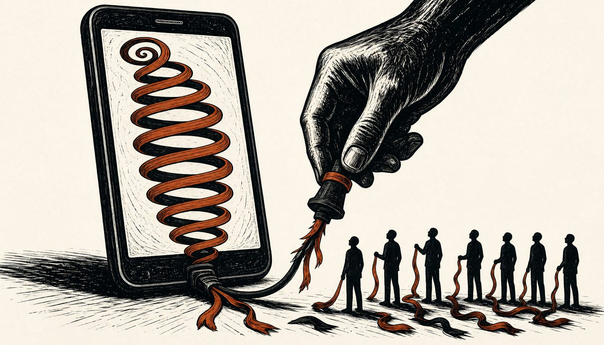
The PvdA bill would fine platforms for tricks like endless scrolling, then pull the plug. Kathmann coordinates rules with MPs in seven other countries.
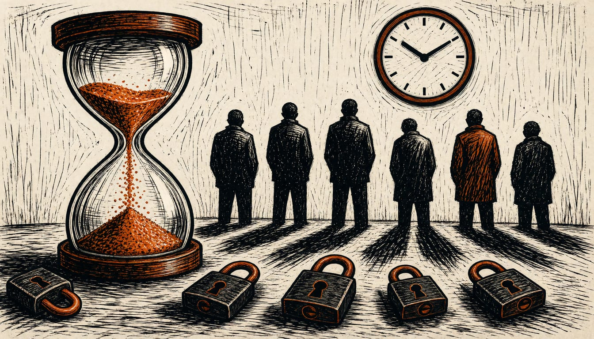
The freeze covers Austria's planned ban and runs to 28 July 2027. The Commission wants member states to back its EU-wide Kids Act instead.

Tucker Carlson says an attack may be days away. Trump said on October 16 he would not use nuclear weapons, and the White House keeps all options open.
Clashes marked the third day of protests in Paris, Marseille and Lyon. Police put 70,000 officers on the streets.
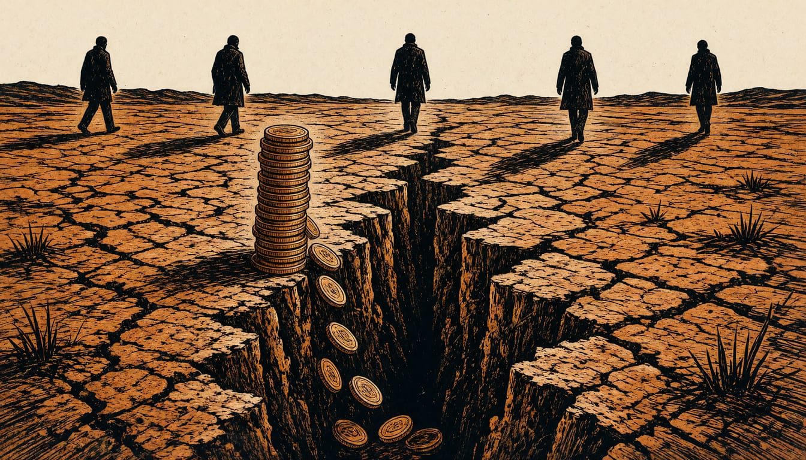
MR walked out over a capital gains tax and a financial transaction tax. Belgium's deficit hit 5.2% of GDP in 2025.
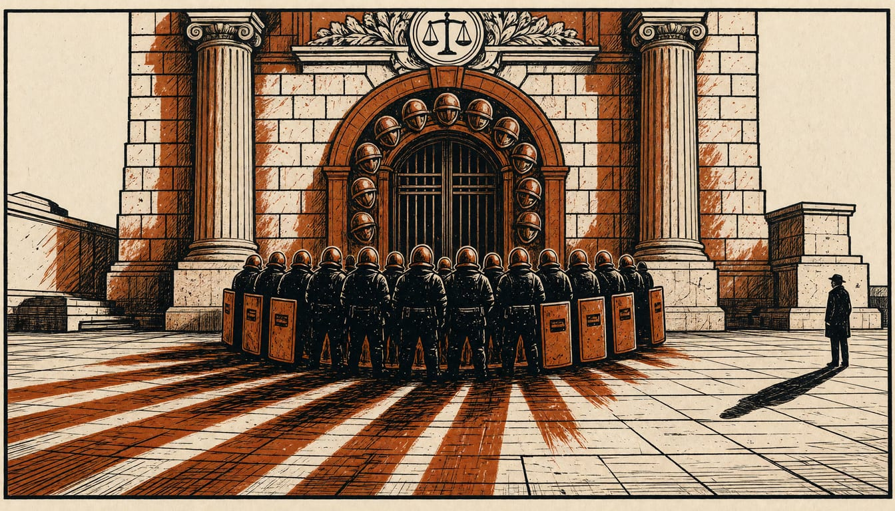
President Nawrocki cut short a trip to Senegal and called the seizure of the court a break with constitutional order. Prime Minister Tusk said in a national address that no politician, not even the president, may enter a court or pressure judges.
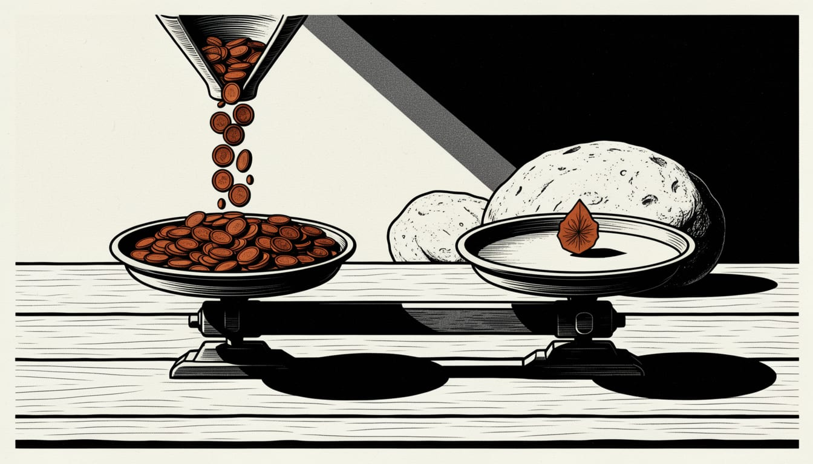
Two decades of membership brought 181 billion euro net and growth far above the EU average. The funds' own figures credit only a small share of it, and the bill for the next budget round is being set now.

The strikes cut half of Russia's refining capacity and pushed fuel prices up inside the country. Crude exports held the line, so the cost has not landed on the ships leaving Russian ports.
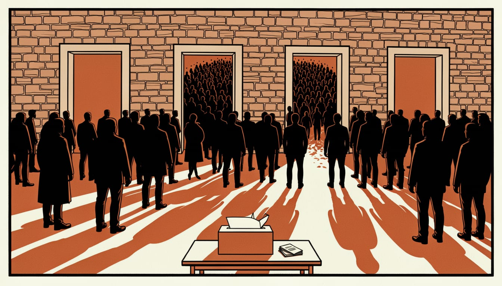
Ipsos puts Attal at 17 percent and Mélenchon at 15. Retailleau rejected the primary, saying it would only help Le Pen.
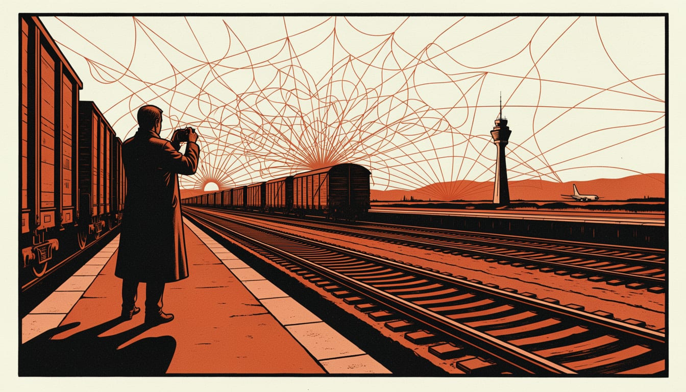
Police found several hundred thousand files, mainly of railway, airport and telecoms sites in Poland and abroad, plus four Russian passports. The case now goes to prosecutors in Wrocław.
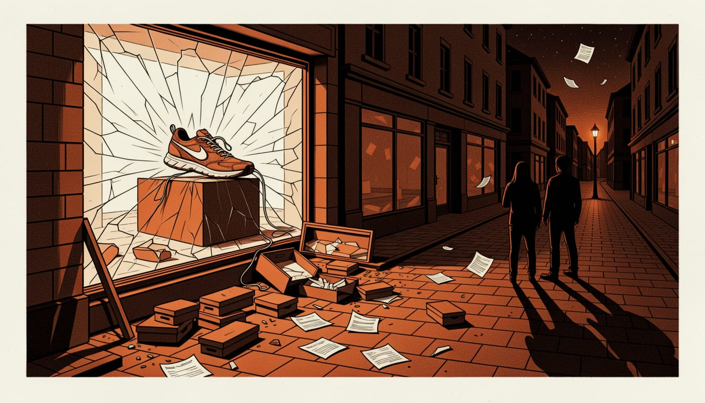
One shop owner near the Konstablerwache puts his damage at 30,000 to 40,000 euros and reopens Monday. More than 100 officers were hurt after Halloween-night looting on the Zeil.
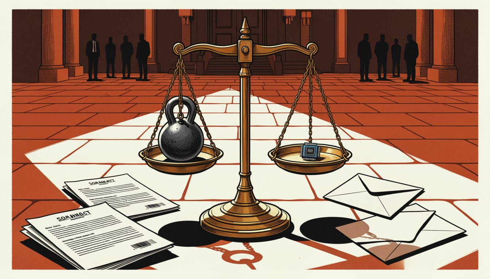
Companies can send views to the European Commission until 9 November. Fines reach 35 million euros for banned AI practices.

The party is hiring at least 12 staff and has built a Westminster video studio for the launch of Reform TV on YouTube, with a paper it says will reach 15 million homes.
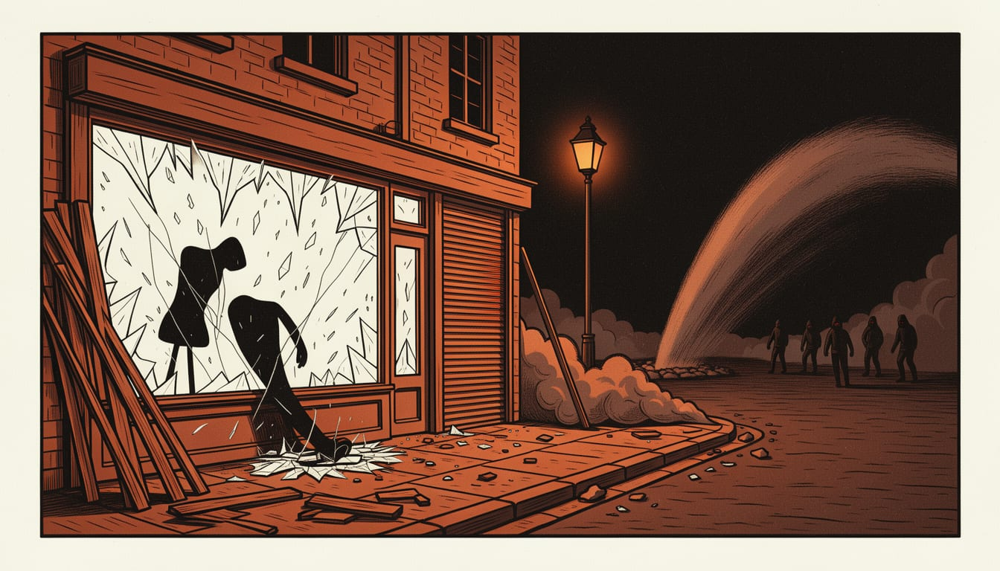
French police arrested 565 people in a third round of demonstrations. German police used water cannon at the marches. Shops in Cologne and Düsseldorf barricaded; Frankfurt shops looted.
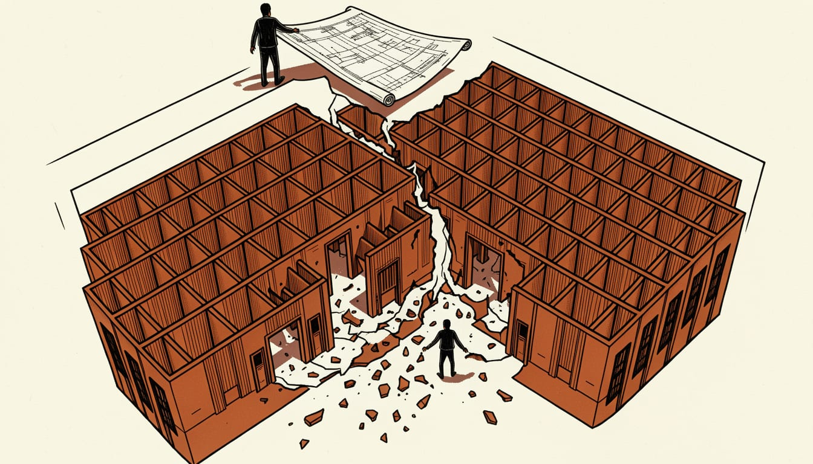
A group led by former Secretary-General Catherine Day wants the Commission to work across directorates instead of in silos. Commissioner Serafin must give final recommendations to von der Leyen by the end of 2026.
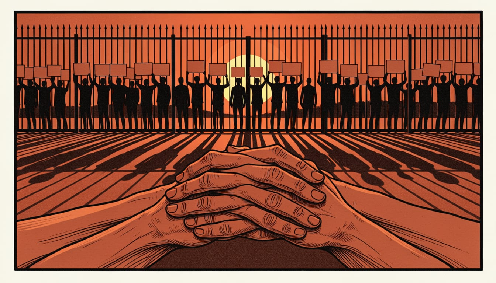
The CFDT, CGT, FO, UNSA and FSU back the students' right to protest and join their demands over wages and public services. The government calls the blockades unlawful.
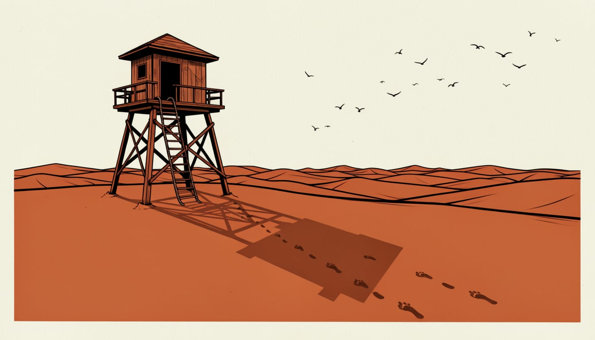
MINURSO's mandate expires on 31 October after Moscow blocked a US draft that would have cut the mission's military component by at least half. Morocco's Royal Cabinet says the mission's personnel should leave the southern provinces in the coming days.

The pause ends late on 1 November. Soldiers say lorries, Grad launchers and drones show Russia is preparing a bigger attack.

The plan adds a quick reaction force and a bigger role in returns. Member states and Parliament must still agree, and most states saw no need for a big enlargement in February.